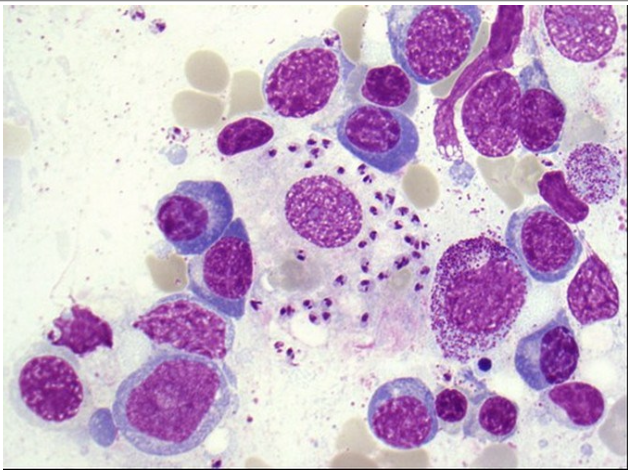

Vraag 1

Welke micro-organismen die een infectieziekte kunnen veroorzaken zijn te zien in het beenmerg van deze patiënt?
Vraag 2
Welke drie van de onderstaande symptomen zijn de zogenoemde B-symptomen?
Meerdere antwoorden mogelijk.
Vraag 3
Een 66-jarige vrouw komt op de eerste hulp met moeheid en bleekheid. Er blijkt sprake van een acute nierinsufficiëntie (kreatinine 420 µmol/L), Hb 5,0 mmol/L, calcium 2,8 mmol/l. Een CT-scan van het skelet toont enkele lytische lesies in de schedel. U vermoedt multipel myeloom. Om welke reden moet u vanavond de diagnose stellen en direct starten met behandeling?
Vraag 4
Een 60-jarige patiënt komt bij de huisarts met vermoeidheid, een rood gelaat, hoofdpijn en jeuk na het douchen. Bloedonderzoek: Hb 11,9 mmol/L, leukocyten 11,2 × 109/L, trombocyten 350 × 109/L. Wat is de meest waarschijnlijke diagnose?
Vraag 5
Bij een acute myeloïde leukemie is er sprake van een woekering van mature cellen. Deze bewering is:
Vraag 6
Welke twee van onderstaande transfusies kunnen tot een acute hemolytische transfusiereactie leiden?
Meerdere antwoorden mogelijk.
Vraag 7
U bent chirurg. Na welke operatie moet u het vitamine B12 van uw patiënt goed in de gaten houden omdat er een deficiëntie ontstaat?
Vraag 8
Een patiënt van 65 jaar presenteert zich met een progressief vol gevoel links boven in de buik. Sterk vergrote milt 14 cm onder de ribbenboog. Trombocyten normaal, milde anemie Hb 7.8 mmol/l. Welke perifere differentiatie past het best bij dit klinisch beeld?
Vraag 9
De twee meest voorkomende vormen van non-Hodgkin lymfoom (NHL) zijn het diffuus grootcellig B-cel lymfoom (DLBCL) en het folliculair lymfoom. Welke van de onderstaande kenmerken passen ALLEEN bij een DLBCL en NIET bij een folliculair lymfoom?
Meerdere antwoorden mogelijk.
Vraag 10
Welke van onderstaande vormen van hemoglobine is pathologisch (komt niet bij gezonde personen voor)?
Vraag 11
Combineer onderstaande laboratoriumuitslagen met de juiste van de vier ziekten. Iedere ziekte mag maar 1 maal gecombineerd worden.
Sleep een optie naar de bijbehorende rij, of tik eerst op een kaart en dan op een rij.
Chronische lymfatische leukemie
Sleep hier naartoe
Essentiële trombocytose
Sleep hier naartoe
Acute Myeloïde Leukemie
Sleep hier naartoe
Auto-immuun trombocytopenie
Sleep hier naartoe
Vraag 12
Een 72-jarige patiënte met een lymfoplasmacytair lymfoom (ziekte van Waldenström) presenteert zich met vermoeidheid, verwardheid, wazig zien en benauwdheid. Wat zou er aan de hand kunnen zijn en welke therapie moet worden ingesteld?
Vraag 13
Een 30-jarige patiënt die wordt behandeld voor een Burkitt lymfoom komt op de eerste hulp met 39 graden koorts. Hb 7,2 mmol/L, leukocyten 2 × 109/L, neutrofielen 0,3 × 109/L, trombocyten 60 × 109/L. De thoraxfoto toont geen infiltratieve afwijkingen. Wat doet u?
Vraag 14
Een 25-jarige patiënte heeft sinds 4 maanden een progressieve zwelling rechts in de hals. Infectieuze oorzaken zijn uitgesloten. De huisarts denkt aan een maligne lymfklierzwelling (lymfoom) en verwijst naar u (de hematoloog). Wat is uw eerste diagnostische vervolgstap?
Vraag 15
Bij een 65-jarige vrouw wordt de diagnose acute myeloïde leukemie gesteld. Hb 6,5 mmol/l, trombocyten 60 × 109/l, leukocyten 52,5 × 109/l met 0,3 × 109/l neutrofiele granulocyten. Zij heeft in het geheel geen klachten. Welke behandeling moet nu voorgesteld worden?
Vraag 16
Welke bevindingen kunnen worden aangetoond met welk type onderzoek?
Sleep een optie naar de bijbehorende rij, of tik eerst op een kaart en dan op een rij.
Polymerase kettingreactie (PCR)
Sleep hier naartoe
Cytogenetisch onderzoek
Sleep hier naartoe
Gelelectroforese en immunofixatie
Sleep hier naartoe
Bloeduitstrijk
Sleep hier naartoe
Vraag 17
Welke van onderstaande medicijnen wordt gebruikt in de behandeling voor patiënten met een chronische myeloïde leukemie?
Vraag 18
Welke drie van onderstaande karakteristieken horen ALLEEN bij een allogene stamceltransplantatie en zijn dus NIET van toepassing bij een autologe stamceltransplantatie?
Meerdere antwoorden mogelijk.
Vraag 19
Welke combinatie van onderstaande mogelijke oorzaken kunnen BEIDE een trombocytose veroorzaken?
Vraag 20
Er komt een 25-jarige vrouw bij de hematoloog met een Hodgkin lymfoom. Zij heeft last van nachtzweten en op de PET-CT scan zijn vergrote lymfeklieren in het mediastinum en in het abdomen zichtbaar. Welk stadium stelt de hematoloog vast?
Vraag 21
Welke mutatie wordt in > 95% van de patiënten met polycythemia vera gevonden?
Vraag 22
Uw patiënte van 19 met een beta thalassemia major die afhankelijk is van transfusies wil vaker transfusies omdat zij zo moe is. Haar Hb is 5.0 mmol/l. Welke van onderstaande redenen is het meest belangrijk om haar uit te leggen dat dit op de lange termijn niet zo'n goed idee is?
Vraag 23
Een 45-jarige Italiaanse vrouw presenteert zich met moeheid. Hb 4.8 mmol/l, trombocyten 500 × 109/l, verlaagd MCV, verlaagd aantal reticulocyten. Zij volgt een vegetarisch dieet en eet geen eieren. Wat is de meest waarschijnlijke oorzaak van de anemie?
Vraag 24
Een 82-jarige vrouw breekt haar heup. Pre-operatieve screening toont: Hb 7.5 mmol/l, trombocyten 180 × 109/l, leukocyten 75 × 109/l, bloeduitstrijk 90% lymfocyten, 7% neutrofielen, 3% monocyten. Welke opmerking is juist?
Vraag 25
Een jonge patiënt met de ziekte van Hodgkin heeft anderhalf jaar na zijn behandeling jeuk over het gehele lichaam zonder afwijkingen van de huid. Op de PET-CT scan waren na afsluiting van behandeling nog enkele klieren in het mediastinum zichtbaar zonder verhoogde glucoseopname. Bij lichamelijk onderzoek geen afwijkingen. Wat is de juiste handelwijze?
Vraag 26
Een man van 25 jaar van Griekse afkomst presenteert zich op de eerste hulp met een Hb van 5 mmol/l. Hij heeft recent anti-malaria profylaxe gebruikt en zijn urine is rood gekleurd. Geen koorts of rillingen. In de familie komen af en toe "aanvallen van bloedarmoede" voor. Reticulocyten verhoogd. Wat is de meest waarschijnlijke diagnose?
Vraag 27
Welke virussen staan tot op heden als kankerverwekkend bekend? (meerdere antwoorden mogelijk)
Meerdere antwoorden mogelijk.
Vraag 28
Wat zijn de moleculaire en erfelijkheidskenmerken van familiair retinoblastoom?
Familiair retinoblastoom wordt veroorzaakt door een mutatie in een en erft autosomaal over.
Vraag 29
Welk mechanisme verklaart hoe verhoogde miRNA-expressie bijdraagt aan tumorvorming?
Verhoogde expressie van een bepaald miRNA levert een bijdrage aan het ontstaan van een tumor. Het miRNA de translatie van mRNA van een .
Vraag 30
Zet de stappen van progressie door het G1 checkpoint in de juiste volgorde.
Sleep een optie naar de bijbehorende rij, of tik eerst op een kaart en dan op een rij.
Stap 1
Sleep hier naartoe
Stap 2
Sleep hier naartoe
Stap 3
Sleep hier naartoe
Stap 4
Sleep hier naartoe
Stap 5
Sleep hier naartoe
Vraag 31
Er komt een 55-jarige vrouw op de polikliniek met zeurende bovenbuikspijn sinds 3 maanden. Zij is 8 kilo afgevallen en heeft tevens melaena. Welk vervolgonderzoek vraagt u als eerste aan?
Vraag 32
Bij een 20-jarige man worden uitzaaiingen vastgesteld in lymfeklieren en longen. Wat is de meest waarschijnlijke primaire tumor?
Vraag 33
Welke van onderstaande beweringen is/zijn juist over adjuvante chemotherapie bij colorectaal carcinoom (CRC)? Bewering 1: In de beslissing tot het geven van adjuvante chemotherapie wordt geen onderscheid gemaakt tussen colon- en rectumcarcinoom. Bewering 2: Adjuvante chemotherapie voor CRC is geïndiceerd bij patiënten met stadium III coloncarcinoom. Bewering 3: Adjuvante chemotherapie bij CRC bestaat uit 5FU en oxaliplatin gecombineerd met bevacizumab.
Vraag 34
Waarom wordt bij patiënten die behandeld worden met capecitabine oraal of 5FU/leukovorin intraveneus van te voren de DPD-enzymactiviteit gemeten? (DPD = dihydropyrimidine dehydrogenase)
Vraag 35
Welke factoren spelen mee bij het afzien van chirurgisch behandelen (mastectomie danwel lumpectomie) van een 78-jarige patiënt met een 4 cm groot mammacarcinoom? (meerdere antwoorden mogelijk)
Meerdere antwoorden mogelijk.
Vraag 36
Wat zijn sterke aanwijzingen voor de aanwezigheid van erfelijke darmkanker bij een patiënt? 1. Optreden van darmkanker op jonge leeftijd (onder 50 jaar). 2. Optreden van twee primaire darmtumoren in één patiënt. 3. Aanwezigheid van uitzaaiingen. 4. Een afwijkende weefseltest (MSI-high tumor).
Vraag 37
De behandeling van een carcinoom van het hoofdhalsgebied bestaat vaak uit chemoradiatie. Tijdens de bestraling wordt dan gelijktijdig chemotherapie gegeven. Met welk doel wordt dit gelijktijdig gedaan?
Vraag 38
Welke van onderstaande is een bekende en belangrijke bijwerking van chemotherapie?
Vraag 39
Welke systemische adjuvante therapie is geïndiceerd bij deze patiënte?
Een 75-jarige vitale vrouw heeft een mastectomie en okselkliertoilet ondergaan (pT1N1 mammacarcinoom, radicaal verwijderd, ER+, PR+, Her2neu-). In het kader van therapie komt zij in aanmerking voor .
Vraag 40
Een patiënt ontwikkelt klachten berusting op hypercalciëmie. De oorzaak blijkt een occult longcarcinoom te zijn dat een eiwit PTHrP produceert dat structureel en functioneel lijkt op bijschildklierhormoon. Waarvan is deze combinatie van afwijkingen een voorbeeld?
Vraag 41
Oudere patiënten met kanker zijn een heterogene groep, maar wel met een aantal veel voorkomende kenmerken. Wat is GEEN kenmerk van deze groep?
Vraag 42
De meest voorkomende vorm van huidkanker in Nederland is:
Vraag 43
Welk antwoord is NIET juist betreffende BRAF-remmers bij het gemetastaseerde melanoom? BRAF-remmers…
Vraag 44
Patiënten met gemetastaseerd melanoom worden tegenwoordig behandeld met immunotherapie in de vorm van checkpoint-remmers. Welke van onderstaanden is GEEN checkpoint-remmer?
Vraag 45
Welke tumoren worden standaard behandeld met angiogeneseremmers?
Voor welke van onderstaande aandoeningen is behandeling met angiogeneseremmers één van de standaardbehandelingen? Prostaatkanker: . Blaaskanker: . Nierkanker: .
Vraag 46
Indien er sprake is van een gelokaliseerd prostaatcarcinoom kan de uroloog een radicale prostatectomie uitvoeren. Welke organen worden dan standaard verwijderd?
Vraag 47
Wat is brachytherapie?
Vraag 48
Een 50-jarige patiënte met een hepatogeen gemetastaseerd colorectaalcarcinoom wordt behandeld met 1e lijns palliatieve chemotherapie. Na 3 maanden laat de CT-scan een verandering van een leverlaesie in segment 3 zien van 20 naar 21mm en een nieuwe laesie in leversegment 1. Wat is de objectieve respons bij deze patiënt volgens RECIST-criteria?
Vraag 49
Wat zijn kenmerken van euthanasie?
Vraag 50
Benoem de 4 fasen van palliatieve ziekte met bij iedere fase de psychologische distress.
Vraag 51
Een 85-jarige vrouw met een ossaal en hepatogeen gemetastaseerd mammacarcinoom wordt door de eerste hulp arts gezien in verband met een delier. Welke van onderstaande onderzoeken zou u als eerste verrichten om de onderliggende oorzaak te achterhalen?
Vraag 52
Welke van onderstaande opioïden die worden toegepast bij de medicamenteuze behandeling van pijn bij kanker zijn beschikbaar voor transdermale toediening?
Vraag 53
Er komt een 60-jarige patiënt op de poli ter follow-up na hemi-colectomie links vanwege een colorectaalcarcinoom. Er blijkt sprake van twee levermetastasen. Wat is nu het behandelplan van voorkeur?
Vraag 54
Een 36-jarige patiënt heeft een coloncarcinoom in het caecum, dat niet is gemetastaseerd. U besluit een gedeelte van de dikke darm te verwijderen. Welke bewering is juist?
Vraag 55
Na het geven van slecht nieuws (slechte diagnose) dient de arts de patiënt op te vangen. Welke drie van onderstaande interventies dient de arts te VERMIJDEN direct na het geven van slecht nieuws?
Meerdere antwoorden mogelijk.
Vraag 56
Patiënten in de palliatieve fase blijken soms enerzijds de ernst van de situatie te beseffen, maar lijken deze tegelijkertijd ook te ontkennen. Dit gedrag noemen we: